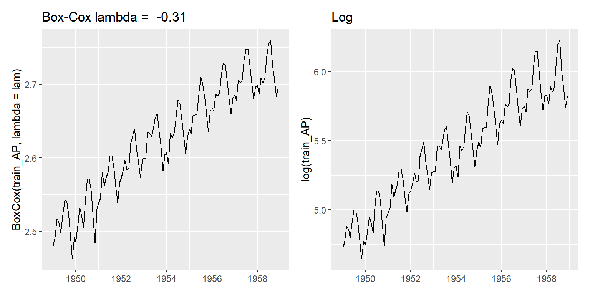
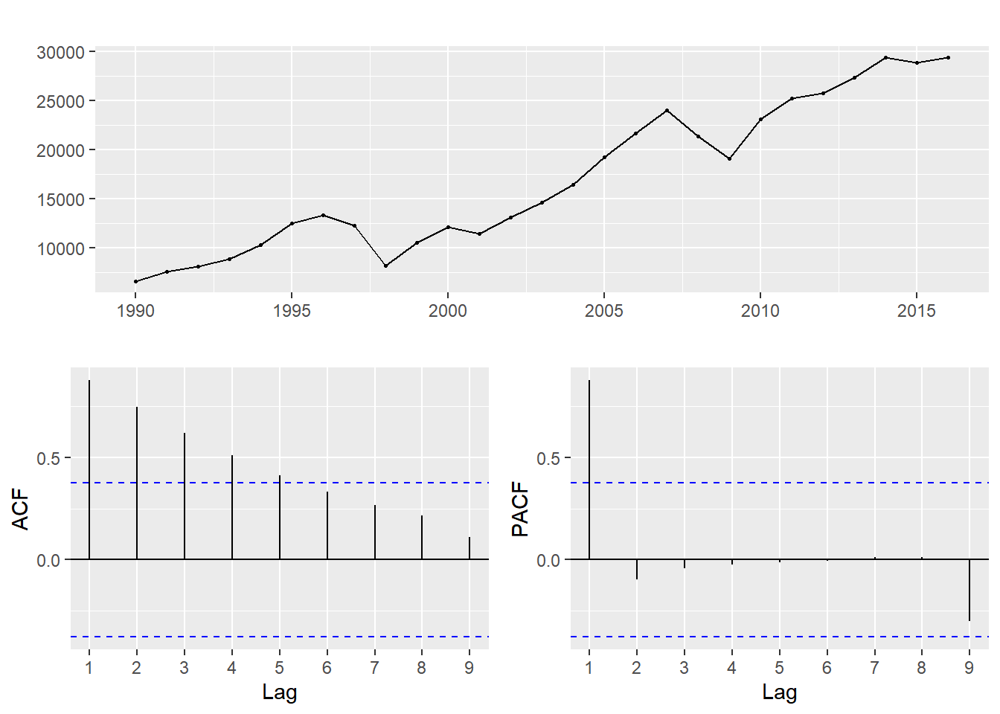
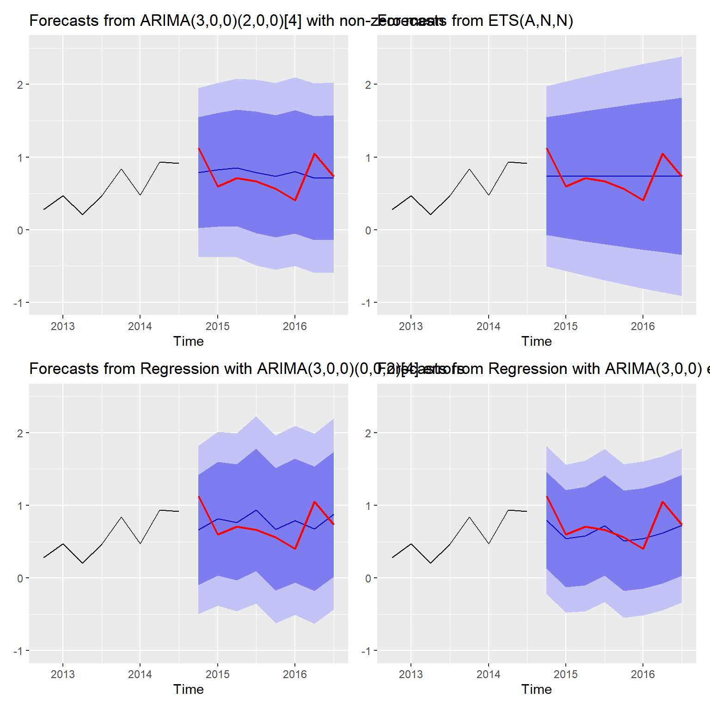

train_b <- window(ausbeer, start = 1975, end = c(2008, 2))
test_b <- window(ausbeer, start = c(2008, 3))회귀모형
ARMA 오차 회귀모형
- 예제 : 분기별 호주 맥주 생산량 자료 (
fpp2::ausbeer)
1. 백색잡음오차 시계열 회귀모형 적합
ausbeer는 1956년 1분기부터 2010년 2분기까지 호주의 분기별 맥주 생산량이다. 전체 기간 중 1975년 1분기 이후 자료에 대한 회귀모형을 적합시켜보자. 마지막 2년 자료는 test data로 남겨두자.
Figure 1 은 전체 자료의 시계열 그래프이다. Test data는 빨간 색으로 구분했다.
autoplot(train_b) +
autolayer(test_b, color = "red", size = 0.8) +
labs(y = NULL, x = NULL)ausbeer의 시계열 그래프
시계열자료에 대한 회귀모형의 적합은 함수 tslm()으로 할 수 있다. 함수 tslm()은 lm()과 실질적으로 동일한 함수지만, ts 객체에 대한 회귀모형 적합을 위한 함수이다. 잔차 및 적합값이 ts 객체로 생성되고, 결측값 처리 방식이 시계열자료에 적합하도록 설정되었다.
추세 변수와 계절 변수를 시점 \(t\)를 이용하여 생성하는 방법을 살펴보자. 먼저 추세 변수는 함수 time()으로 자료가 관측된 시점을 생성할 수 있다. 자료 train_b에 대해 함수 time()을 적용한 결과를 살펴보자. 1975년 1분기 값을 1975.00으로 두고, 1/4 간격으로 다음 분기의 관측 시점을 생성하고 있다.
time(train_b)[1:9]
## [1] 1975.00 1975.25 1975.50 1975.75 1976.00 1976.25 1976.50 1976.75 1977.00관측 시점을 \(t = 1, 2, 3, \ldots\) 로 하여 사용하고자 한다면, 1:length(train_b)를 추세 변수로 사용하거나, 함수 tslm()에서 trend를 추세 변수로 사용하면 된다.
계절 변수로 dummy 변수를 사용한다면 함수 forecast::seasonaldummy()를 사용하거나, 함수 tslm()에서 season을 변수로 사용하면 된다. 계절 주기에 맞추어 필요한 dummy 변수를 생성한다.
seasonaldummy(train_b)[1:5,]
## Q1 Q2 Q3
## [1,] 1 0 0
## [2,] 0 1 0
## [3,] 0 0 1
## [4,] 0 0 0
## [5,] 1 0 0Fourier series 변수를 사용한다면 함수 forecast::fourier()를 사용하면 된다. 모형에 포함되는 fourier series 변수들의 최대 주기는 옵션 K에 지정하면 된다.
fourier(train_b, K = 2)[1:5,]
## S1-4 C1-4 C2-4
## [1,] 1 0 -1
## [2,] 0 -1 1
## [3,] -1 0 -1
## [4,] 0 1 1
## [5,] 1 0 -1S1-4와 C1-4는 \(K=1\) 에 해당하는 \(\sin(2\pi t/4)\) 와 \(\cos(2\pi t/4)\) 를 의미하고, C2-4는 \(K=2\) 에 해당하는 \(\cos(2\pi 2t/4)\) 를 나타내고 있다.
함수 time()에 의한 추세 변수와 seasonaldummy()에 의한 계절 변수를 사용하여 회귀모형을 적합해 보고, 그 결과를 확인해 보자.
fit1 <- tslm(train_b ~ time(train_b) + seasonaldummy(train_b))summary(fit1)
##
## Call:
## tslm(formula = train_b ~ time(train_b) + seasonaldummy(train_b))
##
## Residuals:
## Min 1Q Median 3Q Max
## -47.776 -11.771 -0.738 10.842 63.468
##
## Coefficients:
## Estimate Std. Error t value Pr(>|t|)
## (Intercept) 5335.5613 325.0641 16.41 <2e-16 ***
## time(train_b) -2.4112 0.1632 -14.78 <2e-16 ***
## seasonaldummy(train_b)Q1 -74.4299 4.4641 -16.67 <2e-16 ***
## seasonaldummy(train_b)Q2 -118.3271 4.4639 -26.51 <2e-16 ***
## seasonaldummy(train_b)Q3 -105.7240 4.4973 -23.51 <2e-16 ***
## ---
## Signif. codes: 0 '***' 0.001 '**' 0.01 '*' 0.05 '.' 0.1 ' ' 1
##
## Residual standard error: 18.27 on 129 degrees of freedom
## Multiple R-squared: 0.8911, Adjusted R-squared: 0.8877
## F-statistic: 263.9 on 4 and 129 DF, p-value: < 2.2e-16이번에는 변수 trend와 season을 사용해서 적합해 보고, 결과를 확인해 보자.
fit2 <- tslm(train_b ~ trend + season)summary(fit2)
##
## Call:
## tslm(formula = train_b ~ trend + season)
##
## Residuals:
## Min 1Q Median 3Q Max
## -47.776 -11.771 -0.738 10.842 63.468
##
## Coefficients:
## Estimate Std. Error t value Pr(>|t|)
## (Intercept) 499.6812 4.1577 120.181 < 2e-16 ***
## trend -0.6028 0.0408 -14.775 < 2e-16 ***
## season2 -43.8972 4.4306 -9.908 < 2e-16 ***
## season3 -31.2941 4.4639 -7.011 1.19e-10 ***
## season4 74.4299 4.4641 16.673 < 2e-16 ***
## ---
## Signif. codes: 0 '***' 0.001 '**' 0.01 '*' 0.05 '.' 0.1 ' ' 1
##
## Residual standard error: 18.27 on 129 degrees of freedom
## Multiple R-squared: 0.8911, Adjusted R-squared: 0.8877
## F-statistic: 263.9 on 4 and 129 DF, p-value: < 2.2e-16fit1과 fit2의 적합 결과가 서로 다른 것처럼 보인다. 그러나 추세의 기울기가 다른 것은 모형에서 사용된 추세 변수의 간격이 다르기 때문이다. 즉, 두 모형의 추세 기울기가 4배 차이 나는 이유는 모형 fit1에서 사용된 추세 변수의 간격이 1/4인 반면에 모형 fit2에서 사용된 추세 변수의 간격은 1이기 때문이다.
또한 절편이 다른 것은 두 모형의 기준 범주가 다르며, 사용된 추세 변수의 범위가 다르기 때문이다. 즉, fit1에서 사용된 추세 변수는 1975.00부터 값을 갖고 있지만, fit2에서는 추세 변수가 1부터 값을 갖고 있으며, 함수 seasonaldummy()는 마지막 범주를 기준 범주로 설정하는데, 변수 season은 첫 번째 범주를 기준 범주로 설정하고 있어서, dummy 변수의 구성도 다르게 된다.
두 모형의 적합값을 비교해 보면 실질적으로 같은 모형임을 알 수 있다.
tibble(fit1 = fit1$fitted, fit2 = fit2$fitted)
## # A tibble: 134 × 2
## fit1 fit2
## <dbl> <dbl>
## 1 499. 499.
## 2 455. 455.
## 3 467. 467.
## 4 572. 572.
## 5 497. 497.
## 6 452. 452.
## 7 464. 464.
## 8 569. 569.
## 9 494. 494.
## 10 450. 450.
## # ℹ 124 more rows이번에는 함수 time()에 의한 추세 변수와 fourier()에 의한 Fourier series 변수를 사용하여 회귀모형을 적합해 보고, 그 결과를 확인해 보자. 분기별 자료의 최대 주기인 K=2를 지정해서 확인해 보자.
fit3 <- tslm(train_b ~ time(train_b) + fourier(train_b, K=2))summary(fit3)
##
## Call:
## tslm(formula = train_b ~ time(train_b) + fourier(train_b, K = 2))
##
## Residuals:
## Min 1Q Median 3Q Max
## -47.776 -11.771 -0.738 10.842 63.468
##
## Coefficients:
## Estimate Std. Error t value Pr(>|t|)
## (Intercept) 5260.9410 325.0320 16.186 < 2e-16 ***
## time(train_b) -2.4112 0.1632 -14.775 < 2e-16 ***
## fourier(train_b, K = 2)S1-4 15.6471 2.2319 7.011 1.19e-10 ***
## fourier(train_b, K = 2)C1-4 59.1635 2.2319 26.508 < 2e-16 ***
## fourier(train_b, K = 2)C2-4 15.4567 1.5784 9.793 < 2e-16 ***
## ---
## Signif. codes: 0 '***' 0.001 '**' 0.01 '*' 0.05 '.' 0.1 ' ' 1
##
## Residual standard error: 18.27 on 129 degrees of freedom
## Multiple R-squared: 0.8911, Adjusted R-squared: 0.8877
## F-statistic: 263.9 on 4 and 129 DF, p-value: < 2.2e-16Fourier series의 모든 변수를 사용한 모형은 dummy 변수를 사용한 모형과 실질적으로 동일한 모형이 된다. fit1과 fit3의 적합값을 비교해 보자.
tibble(fit1 = fit1$fitted, fit3 = fit3$fitted)
## # A tibble: 134 × 2
## fit1 fit3
## <dbl> <dbl>
## 1 499. 499.
## 2 455. 455.
## 3 467. 467.
## 4 572. 572.
## 5 497. 497.
## 6 452. 452.
## 7 464. 464.
## 8 569. 569.
## 9 494. 494.
## 10 450. 450.
## # ℹ 124 more rows시계열자료 회귀모형의 모형 진단을 실시해서, 가정 만족에 문제가 있는지 확인해 보자. 함수 checkresiduals()는 lm() 또는 tslm()으로 생성된 객체에 대해서 Breusch-Godfrey 검정으로 독립성을 확인한다. 검정 결과는 오차가 독립이 아니라는 결론이며, 잔차의 시계열 그래프와 ACF에서도 같은 모습을 확인할 수 있다. 시계열자료에 회귀모형을 적합해 생성된 잔차 사이에는 강한 상관 관계가 존재하고 있음을 확인할 수 있었다. 이것은 설명이 안 된 패턴이 남아 있음을 의미하는 것이며, 따라서 추가적인 작업이 필요한 것이다.
checkresiduals(fit1)
##
## Breusch-Godfrey test for serial correlation of order up to 8
##
## data: Residuals from Linear regression model
## LM test = 30.158, df = 8, p-value = 0.00019822. ARMA 오차 시계열 회귀모형 적합
자료 ausbeer에 대해 적합된 백색잡음 회귀모형은 잔차가 독립성을 만족하지 못하는 문제가 발견되었다. 잔차에 남아 있는 패턴을 ARMA 모형으로 설명하기 위해 ARMA 오차 회귀모형을 적합시켜보자.
train_b <- window(ausbeer, start = 1975, end = c(2008, 2))
test_b <- window(ausbeer, start = c(2008, 3))fit4 <- auto.arima(train_b,
xreg = cbind(Time = time(train_b),
Qtr = seasonaldummy(train_b)),
stepwise = FALSE)fit4
## Series: train_b
## Regression with ARIMA(3,0,0)(1,0,0)[4] errors
##
## Coefficients:
## ar1 ar2 ar3 sar1 intercept Time Qtr.Q1 Qtr.Q2
## -0.1233 0.1645 0.2440 0.4155 5227.3160 -2.3573 -73.4170 -117.2944
## s.e. 0.0852 0.0831 0.0849 0.0817 611.6432 0.3071 6.0565 5.2917
## Qtr.Q3
## -105.5713
## s.e. 6.0999
##
## sigma^2 = 264.2: log likelihood = -559.59
## AIC=1139.19 AICc=1140.97 BIC=1168.16잔차에 가장 적합한 모형은 ARIMA(3,0,0)(1,0,0)4가 선택되었다. 즉, 잔차에 비계절형 요소 뿐 아니라 계절형 요소도 남아 있다는 것이다.
ARMA 오차 회귀모형 fit4에 대한 모형 진단을 실시해 보자. 모든 가정이 만족되고 있음을 알 수 있다.
checkresiduals(fit4)
##
## Ljung-Box test
##
## data: Residuals from Regression with ARIMA(3,0,0)(1,0,0)[4] errors
## Q* = 0.64935, df = 4, p-value = 0.9574
##
## Model df: 4. Total lags used: 8ARMA 오차 회귀모형의 예측은 함수 forecast()로 할 수 있다. 사용법은 forecast(object, xreg, ...)가 되는데, object에는 함수 Arima() 혹은 auto.arima()로 생성된 객체를 지정하고, xreg에는 예측 시점에 대한 설명변수의 자료를 벡터 또는 행렬의 형태로 지정하면 된다.
Test data인 test_b에 대한 예측을 실시해 보자.
fc4 <- forecast(fit4,
xreg = cbind(Time = time(test_b),
Qtr = seasonaldummy(test_b))
)ARMA 오차 회귀모형의 예측 결과와 백색잡음 회귀모형의 예측 결과를 비교해 보자. 함수 tslm()에 변수 trend와 season을 사용한 fit2에 대한 예측은 다음과 같이 실시할 수 있다.
fit2 <- tslm(train_b ~ trend + season)
fc2 <- forecast(fit2, h = length(test_b))점 예측 결과는 fc2$mean과 fc4$mean에 할당되어 있다. 두 결과를 비교해 보자. 큰 차이는 없는 것으로 보인다.
tibble(fc2 = fc2$mean, fc4 = fc4$mean)
## # A tibble: 8 × 2
## fc2 fc4
## <dbl> <dbl>
## 1 387. 383.
## 2 492. 485.
## 3 417. 420.
## 4 373. 378.
## 5 385. 384.
## 6 490. 487.
## 7 415. 416.
## 8 370. 373.95% 예측 구간의 폭을 비교해 보자. 예측 구간의 상한은 fc2$upper과 fc4$upper에 할당되었고, 하한은 fc2$lower과 fc4$lower에 각각 할당되어 있다. 예측 구간의 신뢰수준으로 80%와 95%가 사용되는 것이 디폴트이며, 따라서 다음과 같이 95% 예측 구간의 폭을 계산할 수 있다. ARMA 오차 회귀모형의 예측 구간인 fc4의 폭이 더 좁은 것을 확인할 수 있다.
tibble(fc2 = fc2$upper[,2] - fc2$lower[,2],
fc4 = fc4$upper[,2] - fc4$lower[,2])
## # A tibble: 8 × 2
## fc2 fc4
## <dbl> <dbl>
## 1 74.2 63.7
## 2 74.2 64.2
## 3 74.2 65.2
## 4 74.2 66.5
## 5 74.3 71.0
## 6 74.3 71.0
## 7 74.3 71.3
## 8 74.3 71.5예측 오차의 크기를 비교해 보자. 예측 오차의 크기에는 큰 차이가 없음을 알 수 있다.
accuracy(fc2, test_b)
## ME RMSE MAE MPE MAPE MASE
## Training set -1.696987e-15 17.92314 13.57971 -0.1317235 2.924979 0.8311500
## Test set 9.745836e+00 17.30833 11.90530 2.4185316 2.886254 0.7286673
## ACF1 Theil's U
## Training set 0.007149994 NA
## Test set 0.048860146 0.3056324accuracy(fc4, test_b)
## ME RMSE MAE MPE MAPE MASE
## Training set 0.1677325 15.69822 12.11679 -0.07293605 2.618274 0.7416116
## Test set 10.0161277 17.40591 11.67960 2.42511984 2.826267 0.7148528
## ACF1 Theil's U
## Training set 0.004529308 NA
## Test set 0.049644862 0.2895782예측 결과를 그래프로 나타내서 비교해 보자.
library(patchwork)p1 <- autoplot(fc2, include=8) +
autolayer(test_b, color = "red", size=.8) +
labs(y = NULL, x = NULL)
p2 <- autoplot(fc4, include=8) +
autolayer(test_b, color = "red", size=.8) +
labs(y = NULL, x = NULL)
p1 + p2ausbeer 자료에 대한 예측 결과
- 예제: 1970년 1월부터 2005년 12월까지 지구 기온 자료 (
global.txt)
global.txt는 1856년 1월부터 2005년 12월까지의 지구 기온 자료 자료인데, 그 중 1970년 이후 자료만을 대상으로 ARMA 오차 회귀모형과 ARIMA 모형, 그리고 ETS 모형으로 예측 모형을 각각 적합시키고 예측 결과를 비교해 보자.
자료를 불러 들이고 training data와 test data로 분리시키자.
global <- scan("https://raw.githubusercontent.com/yjyjpark/TS-with-R/main/Data/global.txt")
global.ts <- ts(global, start = c(1856, 1), frequency = 12)
train_g <- window(global.ts, start = 1970, end = c(2003,12))
test_g <- window(global.ts, start = 2004)Figure 3 은 1970년부터 자료의 시계열 그래프이다. Test data는 빨간 색으로 구분했다.
autoplot(train_g) +
autolayer(test_g, color = "red", size = .8) +
labs(x = NULL, y = NULL)global.txt의 training data와 test data의 시계열 그래프
1. ARMA 오차 회귀모형 적합
계절 성분이 있는 시계열자료에 회귀모형을 적용할 때에는 계절 성분을 dummy 변수로 나타낼 것인지, Fourier series 변수로 나타낼 것인지를 선택해야 한다. 먼저 선형 추세와 dummy 변수를 사용한 회귀모형을 적합시켜 보자. 추세 변수는 함수 time()으로 생성하고, 계절 변수는 함수 seasonaldummy()로 생성한다.
Time <- time(train_g)
Month <- seasonaldummy(train_g)모형 fit1의 적합 과정에서 stepwise = FASLE와 approximation = FALSE를 제외했는데, 두 옵션을 추가해도 같은 결과를 얻게 된다.
fit1 <- auto.arima(train_g, xreg = cbind(Time, Month))summary(fit1)
## Series: train_g
## Regression with ARIMA(2,0,0) errors
##
## Coefficients:
## ar1 ar2 intercept Time Month.Jan Month.Feb Month.Mar
## 0.4932 0.3204 -34.5510 0.0175 0.0409 0.0522 0.0268
## s.e. 0.0469 0.0472 4.2613 0.0021 0.0161 0.0171 0.0195
## Month.Apr Month.May Month.Jun Month.Jul Month.Aug Month.Sep
## 0.0250 0.0093 0.0162 0.0137 0.0151 0.0002
## s.e. 0.0204 0.0211 0.0213 0.0211 0.0204 0.0194
## Month.Oct Month.Nov
## -0.015 -0.0304
## s.e. 0.017 0.0160
##
## sigma^2 = 0.007112: log likelihood = 437.21
## AIC=-842.41 AICc=-841.02 BIC=-778.23
##
## Training set error measures:
## ME RMSE MAE MPE MAPE MASE
## Training set -0.0007778394 0.08276884 0.06379682 22.62755 81.57672 0.4285951
## ACF1
## Training set 0.006984407잔차는 AR(2) 모형으로 적합되었다.
이번에는 선형 추세와 Fourier series 변수를 사용한 회귀모형을 적합시켜 보자. Fourier series 변수를 사용하기 위해서는 최적 주기를 결정해야 한다.
Time <- time(train_g)
res <- vector("numeric", 6)
for(i in seq(res)){
xreg <- cbind(Time, fourier(train_g, K = i))
fit <- auto.arima(train_g, xreg = xreg)
res[i] <- fit$aicc
}객체 res에는 6개 모형의 AICc가 입력되어 있다. 그 중 두 번째 모형의 AICc가 가장 작은 값임을 확인할 수 있다.
res
## [1] -840.8765 -851.6310 -850.3429 -846.7538 -842.5771 -841.0206(k_min <- which.min(res))
## [1] 2이제 \(K=2\) 를 최적 주기로 하는 Fourier series 변수를 사용한 회귀모형을 적합시켜 보자.
Fourier <- fourier(train_g, K = k_min)
fit2 <- auto.arima(train_g, xreg = cbind(Time, Fourier))summary(fit2)
## Series: train_g
## Regression with ARIMA(2,0,0) errors
##
## Coefficients:
## ar1 ar2 intercept Time Fourier.S1-12 Fourier.C1-12
## 0.4919 0.3200 -34.4729 0.0174 0.0210 -0.0047
## s.e. 0.0469 0.0472 4.2484 0.0021 0.0088 0.0087
## Fourier.S2-12 Fourier.C2-12
## 0.0192 -0.0054
## s.e. 0.0051 0.0051
##
## sigma^2 = 0.007062: log likelihood = 435.04
## AIC=-852.08 AICc=-851.63 BIC=-815.98
##
## Training set error measures:
## ME RMSE MAE MPE MAPE MASE
## Training set -0.0007984029 0.08320983 0.0640202 22.23643 80.56552 0.4300958
## ACF1
## Training set 0.004973903fit1의 경우와 동일하게 fit2에서도 잔차는 AR(2) 모형으로 적합되었다.
두 모형의 검진을 실시해 보자. 먼저 선형 추세와 dummy 변수를 사용한 회귀모형인 모형 fit1의 모형 검진을 진행해 보자. 모형 fit1의 경우에는 가정 만족에 큰 문제가 없는 것으로 보인다.
checkresiduals(fit1)
##
## Ljung-Box test
##
## data: Residuals from Regression with ARIMA(2,0,0) errors
## Q* = 27.817, df = 22, p-value = 0.1818
##
## Model df: 2. Total lags used: 24선형 추세와 Fourier series 변수를 사용한 회귀모형인 모형 fit2의 모형 검진도 진행해 보자. 모형 fit2에도 큰 문제 없이 가정을 만족하고 있음을 알 수 있다.
checkresiduals(fit2)##
## Ljung-Box test
##
## data: Residuals from Regression with ARIMA(2,0,0) errors
## Q* = 27.53, df = 22, p-value = 0.1918
##
## Model df: 2. Total lags used: 24이제 두 회귀모형 중 한 모형을 선택해 보자. 선택 기준으로는 AICc를 사용해 보자.
c(fit1$aicc, fit2$aicc)
## [1] -841.0206 -851.6310모형 fit2의 AICc가 더 작게 계산되었고, 따라서 최종 예측 모형으로 선택하자.
fit_reg <- fit22. ARIMA 모형의 적합
차분 및 계절 차분이 필요한지 여부를 확인해 보자.
ggtsdisplay(train_g)
뚜렷한 추세가 시계열 그래프에서 보이며, 표본 ACF 그래프에서 매우 큰 값의 \(r_{1}\) 과 천천히 감소하는 모습에서 1차 차분이 필요한 것을 알 수 있다. 그러나 계절 차분이 필요한지 여부는 명확하게 보이지 않는다. 단위근 검정 결과를 확인해 보자.
ndiffs(train_g)
## [1] 1
nsdiffs(train_g)
## [1] 01차 차분은 필요하지만, 계절 차분은 필요 없는 것로 나타났다. 이제 1차 차분을 실시한 자료를 대상으로 시계열 그래프와 ACF, PACF를 작성해 보자. 정상성이 만족된 것으로 보인다.
train_g |>
diff() |>
ggtsdisplay()이제 잔차의 표본 ACF와 PACF를 이용해서 모형 식별을 시도해 보자. 비계절 요소는 1시차에서 6시차까지의 패턴으로 인식하게 되는데, ACF는 3시차까지 모두 유의하고, PACF는 1시차와 3시차가 유의한 것으로 나타났다. 이러한 경우에는 ACF를 감소, PACF는 감소 또는 3시차에서 절단으로 볼 수 있으며, 따라서 ARMA 모형이나 AR 모형이 가능할 것으로 보인다. 계절형 요소는 12, 24, 36시차에서 ACF와 PACF가 모두 매우 작은 값을 갖고 있기 때문에, 계절형 요소가 없는 것으로 볼 수도 있고, AR(1)12 또는 MA(1)12로 볼 수도 있는 상황이다.
함수 auto.arima()를 사용해서 AICc가 가장 작은 모형을 찾아 보자.
fit_arima <- auto.arima(train_g,
stepwise = FALSE,
approximation = FALSE)적합 결과는 비계절형 요소만 있는 ARIMA(2,1,1)이 선택된 것을 알 수 있다.
fit_arima
## Series: train_g
## ARIMA(2,1,1)
##
## Coefficients:
## ar1 ar2 ma1
## 0.5198 0.3008 -0.9703
## s.e. 0.0498 0.0492 0.0132
##
## sigma^2 = 0.007576: log likelihood = 417.27
## AIC=-826.55 AICc=-826.45 BIC=-810.51모형 fit_arima에 대한 검진을 실시해 보자. 모든 가정이 만족되고 있음을 볼 수 있다.
checkresiduals(fit_arima)##
## Ljung-Box test
##
## data: Residuals from ARIMA(2,1,1)
## Q* = 30.228, df = 21, p-value = 0.08751
##
## Model df: 3. Total lags used: 243. ETS 모형의 적합
함수 ets()로 AICc가 최소인 모형을 선택해 보자.
fit_ets <- ets(train_g)최적 모형은 ETS(A,N,N)이 선택되었다.
fit_ets
## ETS(A,N,N)
##
## Call:
## ets(y = train_g)
##
## Smoothing parameters:
## alpha = 0.5868
##
## Initial states:
## l = 0.0782
##
## sigma: 0.0885
##
## AIC AICc BIC
## 478.0785 478.1379 490.1123모형 fit_ets에 대한 검진을 실시해 보자.
checkresiduals(fit_ets)
##
## Ljung-Box test
##
## data: Residuals from ETS(A,N,N)
## Q* = 39.376, df = 24, p-value = 0.02493
##
## Model df: 0. Total lags used: 24독립성 가정에 문제가 있는 것으로 나타났다. 독립성 가정을 만족시키지 못하는 모형의 경우에는 예측의 신빙성에 문제가 있을 수 있는데, 점 예측 (point forecast) 결과보다 예측 구간에 더 큰 문제가 있을 수 있다. 간혹 모든 가정을 만족시키는 모형을 찾지 못하는 경우도 있는데, 이런 경우에는 예측 결과를 적용할 때 조심할 필요가 있다.
이제 세 가지 모형인 fit_reg, fit_arima, fit_ets에 의한 예측을 실시하고, 결과를 비교해 보자.
new_reg <- cbind(Time = time(test_g),
Fourier = fourier(test_g, K = k_min))
fc_reg <- forecast(fit_reg, xreg = new_reg)
fc_arima <- forecast(fit_arima, h = length(test_g))
fc_ets <- forecast(fit_ets, h = length(test_g))예측 오차를 비교해 보자.
accuracy(fc_reg, test_g)
## ME RMSE MAE MPE MAPE MASE
## Training set -0.0007984029 0.08320983 0.06402020 22.236428 80.56552 0.4300958
## Test set -0.0266870191 0.09047869 0.06864433 -9.691571 17.39724 0.4611613
## ACF1 Theil's U
## Training set 0.004973903 NA
## Test set 0.300995351 1.015694accuracy(fc_arima, test_g)
## ME RMSE MAE MPE MAPE MASE
## Training set 0.006369769 0.08661271 0.06601014 24.330149 79.34066 0.4434645
## Test set 0.004650257 0.08557693 0.07319499 -2.829173 17.33066 0.4917332
## ACF1 Theil's U
## Training set 0.003457635 NA
## Test set 0.335253668 0.9396727accuracy(fc_ets, test_g)
## ME RMSE MAE MPE MAPE MASE
## Training set 0.001901676 0.08829198 0.06862716 20.00303 84.32056 0.4610460
## Test set -0.062218811 0.10436651 0.07564587 -17.55797 19.80559 0.5081986
## ACF1 Theil's U
## Training set -0.01131321 NA
## Test set 0.26877094 1.191604Test data에 대한 예측 결과를 비교해 보면, 전체적으로 큰 차이는 없는 것으로 보인다. MASE로는 ARMA 오차 회귀모형이 ARIMA 모형 보다 조금 작은 값을 보이고 있으나, RMSE와 MAPE로는 ARIMA 모형이 조금 작은 값을 보이고 있다. 예측 결과를 test data와 함께 표시한 그래프는 Figure 4 에서 볼 수 있다. 예측 구간의 폭을 비교할 수 있도록 세 그래프의 Y축 구간은 동일하게 설정하였다.
y_lim <- c(-.06, 1.06)
p1 <- autoplot(fc_reg, include = 12) +
autolayer(test_g, color = "red", size = .8) +
labs(x = NULL, y = NULL) + ylim(y_lim[1], y_lim[2])
p2 <- autoplot(fc_arima, include = 12) +
autolayer(test_g, color = "red", size = .8) +
labs(x = NULL, y = NULL) + ylim(y_lim[1], y_lim[2])
p3 <- autoplot(fc_ets, include=12) +
autolayer(test_g, color = "red", size = .8) +
labs(x = NULL, y = NULL) + ylim(y_lim[1], y_lim[2])
p1 / p2 / p3global.txt에 대한 세 모형의 예측 결과
- 예제: 1949년부터 1960년 월별 국제선 탑승자 수 자료 (
AirPassengers)
AirPassengers는 1949년 1월부터 1960년 12월까지 월별 국제선 탑승자 수 자료이다. ETS 모형과 ARIMA 모형, 그리고 ARMA 오차 회귀모형에 의한 예측 모형을 적합시키고, 예측 결과를 비교해 보자. 예측 결과의 평가를 위해 마지막 2년 자료는 test data로 남겨두자.
train_AP <- window(AirPassengers, end = c(1958, 12))
test_AP <- window(AirPassengers, start = c(1959, 1))전체 기간에 대한 시계열 그래프를 Figure 5 에 작성해 보자. Test data는 빨간 색으로 구분하였다.
autoplot(train_AP) +
autolayer(test_AP, color = "red", size = .8) +
labs(x = NULL, y = NULL)AirPassengers의 시계열 그래프
증가 추세가 있고, 명확한 계절 성분이 있는 자료이다. 또한 계절 변동 폭이 추세가 증가함에 따라 점점 커지고 있음도 알 수 있다. 따라서 분산 안정화가 필요한 자료이다. 분산 안정화를 위해 Box-Cox 변환 모수를 추정해 보자.
(lam <- BoxCox.lambda(train_AP))
## [1] -0.3096628변환 모수가 \(\lambda=\) -0.3096628 로 추정되었다. 추정된 변환 모수에 의한 변환 결과와 로그 변환에 의한 결과를 비교해 보자. Figure 6 에서 볼 수 있듯이 두 변환 결과는 크게 차이가 나지 않는 것으로 보인다. 이런 경우에는 변환 결과에 대한 해석이 가능한 로그 변환을 선택하는 것이 일반적이라고 하겠다.
p1 <- BoxCox(train_AP, lambda = lam) |>
autoplot() +
labs(title = paste("Box-Cox", "lambda = ", signif(lam, 3)), x = NULL)
p2 <- train_AP |>
log() |>
autoplot() + labs(title = "Log", x = NULL)
p1+p2

1. ETS 모형 적합
ETS 모형은 계절 성분을 승법 형태로 설명할 수 있는 모형이기 때문에, 계절 성분의 진폭 안정화가 반드시 필요한 모형은 아니다. 또한 모수에 대한 해석보다 예측이 주된 용도이기 때문에, 분산 안정화 변환 결과에 대한 해석이 그렇게 중요한 요소가 되지 않는다. 따라서 원자료에 대한 ETS 모형과 Box-Cox 변환 자료에 대한 ETS 모형, 그리고 로그 변환 자료에 대한 ETS 모형을 각각 적합하고 예측 결과를 비교해 보자.
ets_1 <- ets(train_AP, lambda = lam)
ets_fc1 <- forecast(ets_1, h = length(test_AP))
ets_2 <- ets(train_AP, lambda = 0)
ets_fc2 <- forecast(ets_2, h = length(test_AP))
ets_3 <- ets(train_AP)
ets_fc3 <- forecast(ets_3, h = length(test_AP)) Figure 7 는 세 가지 ETS 모형의 예측 결과를 test data와 함께 나타낸 그래프이다. Box-Cox 변환 자료에 대한 ETS 모형의 예측 결과가 test data와 가장 근접한 것으로 보인다. Test data를 이용해서 모형을 선택하는 것이 바람직한 방식은 아니지만, 모형 비교를 위한 다른 마땅한 방법이 없는 상황을 고려하였다.
p1 <- autoplot(ets_fc1, include = 0) +
autolayer(test_AP, color = "red", size = .8) + labs(y = NULL, subtitle = "ets_fc1")
p2 <- autoplot(ets_fc2, include = 0) +
autolayer(test_AP, color = "red", size = .8) + labs(y = NULL, subtitle = "ets_fc2")
p3 <- autoplot(ets_fc3, include = 0) +
autolayer(test_AP, color = "red", size = .8) + labs(y = NULL, subtitle = "ets_fc3")
p1/p2/p3AirPassengers 자료에 대한 ETS 모형의 예측 결과 비교
Box-Cox 변환 자료에 대한 ETS 모형을 최적 ETS 모형으로 선택하고, 모형 진단을 실시해 보자. 독립성 가정을 위반하는 것으로 나타났다.
fit_ets <- ets(train_AP, lambda = lam)checkresiduals(fit_ets)
##
## Ljung-Box test
##
## data: Residuals from ETS(A,A,A)
## Q* = 39.722, df = 24, p-value = 0.02291
##
## Model df: 0. Total lags used: 242. ARMA 오차 회귀모형 적합
회귀모형은 분산 안정화가 필수적인 모형이며, 변환 결과에 대한 해석도 필요한 모형이다. 따라서 로그 변환된 자료를 대상으로 모형 적합을 진행해 보자.
계절 성분을 dummy 변수로 나타내는 모형을 적합해 보자.
Time <- time(train_AP)
Month <- seasonaldummy(train_AP)
fit_r1 <- auto.arima(train_AP, xreg = cbind(Time, Month),
lambda = 0) stepwise = FALSE를 포함시키면 실행 시간이 지나치게 오래 걸리기 때문에 제외했다. 적합 결과를 살펴보자.
fit_r1
## Series: train_AP
## Regression with ARIMA(1,0,0)(0,0,1)[12] errors
## Box Cox transformation: lambda= 0
##
## Coefficients:
## ar1 sma1 intercept Time Month.Jan Month.Feb Month.Mar
## 0.7766 0.1651 -236.9229 0.124 0.0127 0.0017 0.1369
## s.e. 0.0674 0.0994 9.7959 0.005 0.0133 0.0173 0.0198
## Month.Apr Month.May Month.Jun Month.Jul Month.Aug Month.Sep
## 0.0956 0.0872 0.2124 0.3096 0.3018 0.1660
## s.e. 0.0212 0.0220 0.0223 0.0219 0.0211 0.0195
## Month.Oct Month.Nov
## 0.0254 -0.1166
## s.e. 0.0170 0.0128
##
## sigma^2 = 0.001265: log likelihood = 237.46
## AIC=-442.92 AICc=-437.64 BIC=-398.32잔차에 계절형과 비계절형 요소가 모두 남아 있는 것을 알 수 있다. 모형 검진을 실시해 보자. 큰 문제는 없는 것으로 보인다.
checkresiduals(fit_r1)
##
## Ljung-Box test
##
## data: Residuals from Regression with ARIMA(1,0,0)(0,0,1)[12] errors
## Q* = 21.798, df = 22, p-value = 0.472
##
## Model df: 2. Total lags used: 24이번에는 Fourier series 변수를 사용한 회귀모형을 적합해 보자. 먼저 최적 차수를 확인하자.
Time <- time(train_AP)
res <- vector("numeric", 6)
for(i in seq(res)){
xreg <- cbind(Time, fourier(train_AP, K = i))
fit <- auto.arima(train_AP, xreg = xreg,
lambda = 0)
res[i] <- fit$aicc
}(min_k <- which.min(res))
## [1] 5\(K=5\) 가 최적 차수로 확인되었다. 최적 차수에 의한 Fourier series 변수를 사용한 회귀모형을 적합하고 결과를 확인해 보자.
Time <- time(train_AP)
Fourier <- fourier(train_AP, K = min_k)
fit_r2 <- auto.arima(train_AP, xreg = cbind(Time, Fourier),
lambda = 0)summary(fit_r2)
## Series: train_AP
## Regression with ARIMA(2,0,0)(1,0,0)[12] errors
## Box Cox transformation: lambda= 0
##
## Coefficients:
## ar1 ar2 sar1 intercept Time Fourier.S1-12 Fourier.C1-12
## 0.6384 0.1782 0.2060 -233.8237 0.1224 -0.0464 -0.1379
## s.e. 0.0910 0.0964 0.1057 12.3191 0.0063 0.0090 0.0090
## Fourier.S2-12 Fourier.C2-12 Fourier.S3-12 Fourier.C3-12 Fourier.S4-12
## 0.0773 -0.0259 -0.0107 0.0264 0.0245
## s.e. 0.0051 0.0051 0.0039 0.0039 0.0036
## Fourier.C4-12 Fourier.S5-12 Fourier.C5-12
## 0.0261 0.0206 0.0060
## s.e. 0.0036 0.0036 0.0036
##
## sigma^2 = 0.001256: log likelihood = 237.75
## AIC=-443.49 AICc=-438.21 BIC=-398.89
##
## Training set error measures:
## ME RMSE MAE MPE MAPE MASE
## Training set 0.1302685 8.156184 6.052862 -0.05051831 2.597827 0.2118306
## ACF1
## Training set 0.09399082잔차에 계절형과 비계절형 요소가 모두 남아 있는 것을 알 수 있다. 모형 검진을 실시해 보자. 큰 문제가 없는 것으로 보인다.
checkresiduals(fit_r2)
##
## Ljung-Box test
##
## data: Residuals from Regression with ARIMA(2,0,0)(1,0,0)[12] errors
## Q* = 17.88, df = 21, p-value = 0.6566
##
## Model df: 3. Total lags used: 24이제 두 모형 중 한 모형을 최적 모형으로 선택해야 한다. 사실 두 모형은 거의 동일한 모형이다. 두 번째 모형이 11개의 Fourier series 변수 중 10개 사용한 모형이기 때문인데, 만일 \(K=6\) 이 선택되어 11개의 Fourier series 변수를 모두 사용한다면 dummy 변수를 사용한 모형과 사실상 동일한 모형이 된다. 두 모형의 AICc를 근거로 한 모형을 선택해 보자.
c(fit_r1$aicc, fit_r2$aicc)
## [1] -437.6420 -438.2119두 번째 모형의 AICc가 조금 더 작은 값으로 계산되었다. 따라서 Fourier series 변수를 사용한 모형을 최적 회귀모형으로 선택하자.
fit_reg <- fit_r23. ARIMA 모형 적합
ARIMA 모형도 회귀모형의 경우처럼 분산 안정화가 필수적인 모형이며, 변환 결과에 대한 해석도 필요한 모형이다. 따라서 로그 변환된 자료를 대상으로 모형 적합을 진행해 보자. 우선 로그 변환된 자료에 대한 시계열 그래프와 표본 ACF를 작성해 보자.
train_AP |>
log() |>
ggtsdisplay()뚜렷한 추세와 계절 성분이 있는 자료임을 알 수 있다. 계절 차분을 실시하고, 그 결과를 확인해 보자.
train_AP |>
log() |>
diff(lag = 12) |>
ggtsdisplay()
시계열 그래프와 ACF로는 1차 차분이 더 필요한지 여부를 확실하게 결정하기 어려워 보인다. 이런 상황에서는 계절 차분만 실시한 자료에 대한 ARIMA 모형 적합도 시도해 볼 필요가 있는 것으로 보인다.
계절 차분된 자료에 1차 차분을 추가로 실시하고, 그 결과를 확인해 보자. 비정상성 요소가 완전히 제거된 것을 볼 수 있다.
train_AP |>
log() |>
diff(lag = 12) |>
diff() |>
ggtsdisplay()
단위근 검정 결과를 확인해 보자. 계절 차분과 1차 차분이 모두 필요한 것으로 나타난다.
train_AP |>
log() |>
ndiffs()
## [1] 1train_AP |>
log() |>
nsdiffs()
## [1] 1단위근 검정 결과에도 불구하고 1차 차분이 명확하게 필요한 상황으로 판단하기 어렵다고 보고, 계절 차분만 실시한 경우와 계절 차분과 1차 차분을 모두 실시한 경우에 대해서 각각 ARIMA 모형을 적합시켜 보자. 먼저 계절 차분과 1차 차분을 모두 실시한 자료를 대상으로 ARIMA 모형을 적합해 보자.
fit_a1 <- auto.arima(train_AP, lambda = 0,
stepwise = FALSE)적합 결과는 다음과 같다.
summary(fit_a1)
## Series: train_AP
## ARIMA(0,1,1)(0,1,1)[12]
## Box Cox transformation: lambda= 0
##
## Coefficients:
## ma1 sma1
## -0.3424 -0.5405
## s.e. 0.1009 0.0877
##
## sigma^2 = 0.001432: log likelihood = 197.51
## AIC=-389.02 AICc=-388.78 BIC=-381
##
## Training set error measures:
## ME RMSE MAE MPE MAPE MASE
## Training set -0.2372088 8.835339 6.51704 -0.07508532 2.637955 0.2280753
## ACF1
## Training set 0.04249699모형 검진 결과에서는 어떤 문제도 발견되지 않았다.
checkresiduals(fit_a1)
##
## Ljung-Box test
##
## data: Residuals from ARIMA(0,1,1)(0,1,1)[12]
## Q* = 20.34, df = 22, p-value = 0.5618
##
## Model df: 2. Total lags used: 24이번에는 계절 차분만을 실시한 자료를 대상으로 ARIMA 모형을 적합해 보자.
fit_a2 <- auto.arima(train_AP, d = 0, lambda = 0,
stepwise = FALSE)적합 결과는 다음과 같다.
fit_a2
## Series: train_AP
## ARIMA(2,0,0)(0,1,1)[12] with drift
## Box Cox transformation: lambda= 0
##
## Coefficients:
## ar1 ar2 sma1 drift
## 0.6159 0.2356 -0.5562 0.0101
## s.e. 0.0944 0.0965 0.0898 0.0010
##
## sigma^2 = 0.001382: log likelihood = 201.77
## AIC=-393.53 AICc=-392.95 BIC=-380.12모형 검진을 실시해 보면, 모든 가정이 만족되는 것으로 보인다.
checkresiduals(fit_a2)
##
## Ljung-Box test
##
## data: Residuals from ARIMA(2,0,0)(0,1,1)[12] with drift
## Q* = 20.83, df = 21, p-value = 0.4694
##
## Model df: 3. Total lags used: 24이제 두 모형 중 하나의 모형을 선택해 보자. 두 모형은 차분을 실시한 횟수가 각기 다른 자료를 사용한 것이기 때문에 AICc 등의 비교는 의미가 없다. 따라서 Test data를 대상으로 더 근접한 예측 결과를 산출하는 모형을 선택하기로 하자.
fc_a1 <- forecast(fit_a1, h = length(test_AP))
fc_a2 <- forecast(fit_a2, h = length(test_AP))p1 <- autoplot(fc_a1, include = 0) +
autolayer(test_AP, color = "red", size = 1) +
labs(y = NULL, subtitle = "fc_a1")
p2 <- autoplot(fc_a2, include = 0) +
autolayer(test_AP, color = "red", size = 1) +
labs(y = NULL, subtitle = "fc_a2")
p1 + p2두 번째 모형인 ARIMA(2,0,0)(0,1,1)12의 예측 결과가 test data에 더 근접한 것으로 보인다.
fit_arima <- fit_a2이제는 ETS 모형과 ARIMA 모형, 그리고 ARMA 오차 회귀모형의 예측 결과를 비교해 보자.
new_t <- cbind(Time = time(test_AP),
Fourier = fourier(test_AP, K = min_k))
fc_reg <- forecast(fit_r2, xreg = new_t)
fc_ets <- forecast(fit_ets, h = length(test_AP))
fc_arima <- forecast(fit_arima, h = length(test_AP))accuracy(fc_reg, test_AP)
## ME RMSE MAE MPE MAPE MASE
## Training set 0.1302685 8.156184 6.052862 -0.05051831 2.597827 0.2118306
## Test set -10.8769174 22.234136 15.437231 -2.58040955 3.488570 0.5402531
## ACF1 Theil's U
## Training set 0.09399082 NA
## Test set 0.39683635 0.4785114accuracy(fc_ets, test_AP)
## ME RMSE MAE MPE MAPE MASE
## Training set 0.1851383 9.164883 6.647767 0.1873228 2.862835 0.2326503
## Test set -6.3756691 19.752432 14.199026 -1.4099460 3.219620 0.4969199
## ACF1 Theil's U
## Training set 0.3728555 NA
## Test set 0.1682524 0.4355005accuracy(fc_arima, test_AP)
## ME RMSE MAE MPE MAPE MASE
## Training set 0.05350955 8.616827 6.212913 0.05341167 2.560180 0.2174318
## Test set -3.33508240 14.125641 10.626775 -0.66418334 2.356519 0.3719027
## ACF1 Theil's U
## Training set 0.04419876 NA
## Test set 0.14856147 0.2945598ARIMA 모형의 예측 오차가 가장 작은 것으로 나타났다. 예측 결과를 그래프로 비교해 보자.
p1 <- autoplot(fc_reg, include = 0) +
autolayer(test_AP, color = "red", size = 1) +
labs(x=NULL, y=NULL)
p2 <- autoplot(fc_arima, include = 0) +
autolayer(test_AP, color = "red", size = 1) +
labs(x=NULL, y=NULL)
p3 <- autoplot(fc_ets, include = 0) +
autolayer(test_AP, color = "red", size = 1) +
labs(x=NULL, y=NULL)
p1 + p2 + p3AirPassengers 자료에 대한 예측 결과 비교
ARMA 오차 Dynamic 회귀모형
- 예제 : 2014년 호주 빅토리아주의 일일 전기 수요량 자료 (
fpp2::elecdaily)
elecdaily는 \(365 \times 3\) 의 ts 객체 행렬이다. 처음 3개 행을 출력해 보자.
elecdaily[1:3,]
## Demand WorkDay Temperature
## [1,] 174.8963 0 26.0
## [2,] 188.5909 1 23.0
## [3,] 188.9169 1 22.2첫 번째 열인 Demand는 일일 전기 수요량이고, 두 번째 열인 WorkDay는 휴일이면 0, 근무일이면 1을 값으로 갖고 있으며, 세 번째 열인 Temperature는 당일 최고 기온이다. 세 변수의 시계열 그래프를 Figure 10 에 작성해 보자.
autoplot(elecdaily, facets = TRUE)elecdaily를 구성하고 있는 세 변수의 시계열 그래프
시계열자료 행렬 elecdaily의 각 열을 개별 시계열자료로 분리해 보자.
Demand <- elecdaily[,1]
Work <- elecdaily[,2]
Temp <- elecdaily[,3]세 시계열자료는 동일한 기간과 주기를 갖고 있는데, 변수 Demand로 확인해 보자.
start(Demand); end(Demand); frequency(Demand)
## [1] 1 4
## [1] 53 4
## [1] 7시작 시점은 2014년 첫 번째 주 네 번째 날이고, 종료 시점은 2014년 53번째 주 네 번째 날이다. 일일 자료이므로 주기는 7로 설정되어 있다. 주 중 네 번째 날의 요일은 다음과 같이 패키지 lubridate의 함수 wday()로 할 수 있다.
library(lubridate)
wday(ymd("2014-1-1"), label = TRUE)
## [1] 수
## Levels: 일 < 월 < 화 < 수 < 목 < 금 < 토반응변수인 Demand와 셜명변수인 Temp의 정상성 만족 여부를 확인해 보자. 두 변수 모두 차분이 필요한 것으로 보인다.
Demand |>
ggtsdisplay(main = "Demand")
Temp |>
ggtsdisplay(main = "Temperature")
단위근 검정 결과도 확인해 보자.
ndiffs(Demand)
## [1] 1
ndiffs(Temp)
## [1] 1이제 두 변수의 관계를 산점도를 이용해서 살펴보자. Figure 11 에서 두 변수 사이에 2차 함수의 관계가 있음을 볼 수 있다. 회귀모형에 변수 Temp의 제곱항도 포함시켜야 할 것으로 보인다.
tibble(Demand, Temp) |>
ggplot(aes(x = as.numeric(Temp), y = as.numeric(Demand))) +
geom_point() +
geom_smooth(se = FALSE) +
labs(x = "Temperature", y = "Demand")Demand와 Temperature의 산점도
Dynamic 회귀모형을 적합시켜보자. 함수 auto.arima()에 설명변수 Temp와 Temp^2, Work를 행렬 형태로 xreg에 지정해 보자.
xreg <- cbind(Temp, Temp2 = Temp^2, Work)
fit <- auto.arima(Demand, xreg = xreg, stepwise = FALSE)적합 결과를 확인해 보자.
summary(fit)
## Series: Demand
## Regression with ARIMA(2,1,1)(2,0,0)[7] errors
##
## Coefficients:
## ar1 ar2 ma1 sar1 sar2 Temp Temp2 Work
## 0.8246 -0.0225 -0.9805 0.2215 0.4006 -7.8846 0.1849 30.3213
## s.e. 0.0693 0.0670 0.0200 0.0511 0.0558 0.4459 0.0088 1.3353
##
## sigma^2 = 44.7: log likelihood = -1205.77
## AIC=2429.54 AICc=2430.04 BIC=2464.61
##
## Training set error measures:
## ME RMSE MAE MPE MAPE MASE
## Training set 0.01267482 6.60291 4.76803 -0.09527441 2.159178 0.327378
## ACF1
## Training set -0.00108964적합된 회귀모형에 절편이 없는 것을 볼 수 있는데, 이것은 차분을 실시한 자료를 대상으로 회귀모형을 적합시켰기 때문이다.
적합된 모형의 진단을 실시해 보자. 독립성 가정에는 문제가 있는 것으로 보인다.
checkresiduals(fit)
##
## Ljung-Box test
##
## data: Residuals from Regression with ARIMA(2,1,1)(2,0,0)[7] errors
## Q* = 36.21, df = 9, p-value = 3.638e-05
##
## Model df: 5. Total lags used: 14이제 적합된 Dynamic 회귀모형을 이용해서 2015년 1월 1이부터 1월 10일까지의 전력 수요량을 예측해 보자. 이 때 문제가 되는 것은 해당 기간에 대한 변수 Temp의 값도 미리 알 수 없다는 것이다. 이 문제는 변수 Temp의 미래 값을 다른 방법으로 예측해서 사용하거나, 특정한 값으로 가정하고 Demand의 미래 값을 예측해야 한다.
여기에서는 2014년 1월 1일부터 1월 10일까지의 Temp 값을 그대로 사용해서 예측을 실시해 보자. 변수 Work의 값은 2015년 1월 1일 목요일부터 1월 10일 토요일까지 휴일과 근무일을 구분해서 입력할 수 있다.
old_T <- Temp[1:10]
new_x <- cbind(Temp = old_T, Temp2 = old_T^2,
Work = c(0,1,0,0,1,1,1,1,1,0))
fc <- forecast(fit, xreg = new_x)예측 결과에 대한 그래프를 작성해 보자.
autoplot(fc)Demand의 예측 결과
- 예제: 미국 소득, 소비 등의 1970년 1분기부터 2016년 3분기까지 분기별 변화 비율 (
fpp2::uschange)
uschange는 \(187 \times 5\) 의 ts 객체 행렬이다.
uschange[1:3,]
## Consumption Income Production Savings Unemployment
## [1,] 0.6159862 0.972261 -2.4527003 4.810312 0.9
## [2,] 0.4603757 1.169085 -0.5515251 7.287992 0.5
## [3,] 0.8767914 1.553271 -0.3587079 7.289013 0.5다섯 개 시계열자료는 동일한 시작 시점, 종료 시점과 주기를 갖고 있는데, 첫 번째 시계열자료를 이용해서 확인해 보자. 분기별 자료이므로 주기는 4이고, 시작 시점은 1970년 1분기이며, 종료 시점은 2016년 3분기이다.
start(uschange[,1])
## [1] 1970 1
end(uschange[,1])
## [1] 2016 3
frequency(uschange[,1])
## [1] 4첫 번째 시계열자료인 Consumption에 대한 예측 모형을 적합해 보자. ARIMA 모형과 ETS 모형에 의한 예측 모형, ARMA 오차 회귀모형, 그리고 행렬 uschange의 다른 시계열자료를 설명변수로 사용하는 dynamic 회귀모형에 의한 예측 모형을 적합해 보자.
uschange를 구성하고 있는 다섯 변수의 시계열 그래프를 Figure 13 에 작성해 보자. 뚜렷한 추세나 계절 성분이 있는 시계열자료는 없는 것으로 보인다.
autoplot(uschange, facets=TRUE) +
labs(y = NULL, x = NULL)uschange의 다섯 시계열자료의 그래프
다섯 시계열자료의 ACF는 함수 ggAcf()에 개별 시계열자료를 각각 입력해서 작성할 수도 있지만, 조금은 번거로운 작업이 된다. 대신 함수 ggAcf()에 행렬 uschange를 그대로 입력하면 두 변수씩의 모든 조합에 대한 상관 행렬이 작성되는데, 그 중 대각 패널에 각 변수의 ACF가 작성된다.
ggAcf(uschange)uschange의 다섯 시계열자료의 표본 ACF
Figure 13 과 Figure 14 을 근거로 다섯 시계열자료는 모두 정상성을 만족하고 있는 것으로 보인다.
Dynamic 회귀모형에서 설명변수로 사용할 수 있는 시계열자료는 Income, Production, Savings, 그리고 Unemployment이다. 함수 GGally::ggpairs()로 다섯 변수의 산점도 행렬을 작성해 보자.
GGally::ggpairs(as_tibble(uschange) |>
relocate(Consumption, .after=last_col()),
lower=list(continuous="smooth_loess"))uschange의 다섯 시계열자료의 산점도 행렬
변수 (Income, Savings)과 (Production, Uneployment) 사이에 높은 관련성이 있는 것으로 보여서, 변수 Income과 Production만을 설명변수로 포함시키고자 한다. 엄격하고 타당한 변수 선택 방식은 아니지만 가능하면 간단한 모형을 구성하고자 한다.
이제 자료를 분리하고 예측 모형을 적합시켜보자.
uschange_te <- tail(uschange, n = 8)
uschange_tr <- head(uschange, n = nrow(uschange)-8)ARIMA 모형을 적합하고, 결과를 확인해 보자.
fit_arima <- auto.arima(uschange_tr[,1],
stepwise = FALSE, approximation = FALSE)fit_arima
## Series: uschange_tr[, 1]
## ARIMA(3,0,0)(2,0,0)[4] with non-zero mean
##
## Coefficients:
## ar1 ar2 ar3 sar1 sar2 mean
## 0.2267 0.1771 0.2218 -0.0351 -0.1792 0.7482
## s.e. 0.0739 0.0738 0.0726 0.0774 0.0745 0.0951
##
## sigma^2 = 0.3544: log likelihood = -158.39
## AIC=330.78 AICc=331.44 BIC=353.09ETS 모형을 적합하고, 결과를 확인해 보자.
fit_ets <- ets(uschange_tr[,1])fit_ets
## ETS(A,N,N)
##
## Call:
## ets(y = uschange_tr[, 1])
##
## Smoothing parameters:
## alpha = 0.3315
##
## Initial states:
## l = 0.6877
##
## sigma: 0.633
##
## AIC AICc BIC
## 768.8004 768.9376 778.3626관측 시점만을 설명변수로 사용하는 ARMA 오차 회귀모형을 적합해 보자. 추세 변수는 함수 time()으로 생성하고, 계절 성분은 dummy 변수로 표현해 보자.
Time <- time(uschange_tr[,1])
Qtr <- seasonaldummy(uschange_tr[,1])fit_reg <- auto.arima(uschange_tr[,1],
xreg = cbind(Time, Qtr),
stepwise = FALSE, approximation = FALSE)fit_reg
## Series: uschange_tr[, 1]
## Regression with ARIMA(3,0,0)(0,0,2)[4] errors
##
## Coefficients:
## ar1 ar2 ar3 sma1 sma2 Time Qtr.Q1 Qtr.Q2 Qtr.Q3
## 0.2564 0.1608 0.2482 -0.1066 -0.1942 3e-04 0.0554 0.0122 0.172
## s.e. 0.0742 0.0737 0.0729 0.0773 0.0707 1e-04 0.0700 0.0748 0.070
##
## sigma^2 = 0.349: log likelihood = -155.52
## AIC=331.03 AICc=332.34 BIC=362.91Dynamic 회귀모형도 적합해 보자.
fit_dyn <- auto.arima(uschange_tr[,1], d = 0,
xreg = uschange_tr[,c(2,3)],
stepwise = FALSE, approximation = FALSE)fit_dyn
## Series: uschange_tr[, 1]
## Regression with ARIMA(3,0,0) errors
##
## Coefficients:
## ar1 ar2 ar3 intercept Income Production
## 0.0060 0.1960 0.1890 0.5288 0.1741 0.1758
## s.e. 0.0813 0.0734 0.0735 0.0708 0.0457 0.0262
##
## sigma^2 = 0.2696: log likelihood = -133.71
## AIC=281.41 AICc=282.07 BIC=303.72적합시킨 네 모형에 대한 모형 검진도 실시해 보자. 다른 가정 사항에는 모든 모형에 문제가 없는 것으로 나타났지만, Ljung-Box 검정 결과에서 ETS 모형이 독립성 가정을 위반하고 있는 것으로 보인다.
checkresiduals(fit_arima)
##
## Ljung-Box test
##
## data: Residuals from ARIMA(3,0,0)(2,0,0)[4] with non-zero mean
## Q* = 0.6507, df = 3, p-value = 0.8847
##
## Model df: 5. Total lags used: 8checkresiduals(fit_ets)##
## Ljung-Box test
##
## data: Residuals from ETS(A,N,N)
## Q* = 15.865, df = 8, p-value = 0.04436
##
## Model df: 0. Total lags used: 8checkresiduals(fit_reg)
##
## Ljung-Box test
##
## data: Residuals from Regression with ARIMA(3,0,0)(0,0,2)[4] errors
## Q* = 0.32544, df = 3, p-value = 0.9552
##
## Model df: 5. Total lags used: 8checkresiduals(fit_dyn)
##
## Ljung-Box test
##
## data: Residuals from Regression with ARIMA(3,0,0) errors
## Q* = 1.5616, df = 5, p-value = 0.9059
##
## Model df: 3. Total lags used: 8이제 test data에 대한 예측을 실시해 보자. 모형 fit_dyn의 경우에는 test data 시점에서 설명변수의 관측 문제가 있지만, 다른 모형과의 비교를 위해서 설명변수의 값이 알려져 있다고 가정하겠다. 이 가정으로 모형 fit_dyn의 예측은 결과가 더 좋게 나올 수 있다.
fc_arima <- forecast(fit_arima, h = 8)
fc_ets <- forecast(fit_ets, h = 8)
fc_dyn <- forecast(fit_dyn,
xreg = uschange_te[,c(2,3)])Time <- time(uschange_te[,1])
Qtr <- seasonaldummy(uschange_te[,1])
fc_reg <- forecast(fit_reg,
xreg = cbind(Time, Qtr))예측 결과를 test data와 비교해 보자. 모형 fit_dyn의 예측 오류가 가장 작은 것으로 나타났다. ETS 모형도 예측 오류가 다른 모형보다 비교적 작은 것으로 나타났다.
accuracy(fc_arima, uschange_te[,1])
## ME RMSE MAE MPE MAPE MASE
## Training set 0.0002559072 0.5852267 0.4396851 65.90037 189.15841 0.670526
## Test set -0.0475341277 0.2500710 0.2185770 -17.75795 33.64265 0.333333
## ACF1 Theil's U
## Training set 0.00952753 NA
## Test set -0.21075717 0.6797118accuracy(fc_ets, uschange_te[,1])
## ME RMSE MAE MPE MAPE MASE
## Training set 0.0008292707 0.6294144 0.4622752 15.94476 163.66594 0.7049764
## Test set -0.0071405456 0.2275948 0.1819332 -11.07730 27.12135 0.2774507
## ACF1 Theil's U
## Training set -0.004088847 NA
## Test set -0.208694082 0.5901059accuracy(fc_reg, uschange_te[,1])
## ME RMSE MAE MPE MAPE MASE
## Training set 0.0008586772 0.5757214 0.4336545 62.73093 184.11947 0.6613293
## Test set -0.0460208935 0.2877620 0.2542229 -18.22233 37.33168 0.3876936
## ACF1 Theil's U
## Training set 0.003604112 NA
## Test set -0.360236166 0.7215638accuracy(fc_dyn, uschange_te[,1])
## ME RMSE MAE MPE MAPE MASE
## Training set -0.0006526438 0.5104141 0.3844923 43.024517 189.5903 0.5863563
## Test set 0.1004867937 0.2061923 0.1498566 8.058113 18.8564 0.2285334
## ACF1 Theil's U
## Training set 0.002548898 NA
## Test set -0.413909940 0.6493148예측 결과를 그래프로 나타내서 비교해 보자. ETS 모형의 경우 비교적 작은 예측 오류가 나왔지만 모든 시점에서 동일한 예측 결과을 보이는 모형이 선택되었고, 예측 구간의 폭이 가장 넓다는 점을 고려한다면, 바람직한 예측 모형은 아니라고 하겠다.
y_lim <- c(-1, 2.5)
p1 <- autoplot(fc_arima, include = 8) +
autolayer(uschange_te[,1], color = "red", size = .8) +
ylab(NULL) + ylim(y_lim[1], y_lim[2])
p2 <- autoplot(fc_ets, include = 8) +
autolayer(uschange_te[,1], color = "red", size = .8) +
ylab(NULL) + ylim(y_lim[1], y_lim[2])
p3 <- autoplot(fc_reg, include = 8) +
autolayer(uschange_te[,1], color = "red", size = .8) +
ylab(NULL) + ylim(y_lim[1], y_lim[2])
p4 <- autoplot(fc_dyn, include = 8) +
autolayer(uschange_te[,1], color = "red", size = .8) +
ylab(NULL) + ylim(y_lim[1], y_lim[2])
(p1 + p2) / (p3 + p4)

uschange의 Consumption에 대한 예측 결과 비교
연습문제
1. 파일 total_energy.csv에는 1997년 1월부터 2023년 2월까지 연료원별 발전된 전기의 월별 소비량 자료가 입력되어 있으며, 웹 서버 https://raw.githubusercontent.com/yjyjpark/TS-with-R/main/Data/ 에서 불러올 수 있다.
변수로는 관측 시점(time)과 석탄(coal), 석유(oil), 액화천연가스(gas), 수력(water), 원자력(neclear), 신재생 및 기타(renewal)를 원료로 발전된 전기의 소비량이다. 자료의 처음과 마지막 5 케이스는 다음과 같다.
total_energy |> slice_head(n = 5)
## # A tibble: 5 × 7
## time coal oil gas water neclear renewal
## <chr> <dbl> <dbl> <dbl> <dbl> <dbl> <dbl>
## 1 Jan-97 2820 10749 1796 95 1521 103
## 2 Feb-97 2490 9049 1435 76 1255 99
## 3 Mar-97 2995 9776 1482 73 1195 109
## 4 Apr-97 2646 8683 1250 80 1431 113
## 5 May-97 2855 8287 1181 111 1468 116total_energy |> slice_tail(n = 5)
## # A tibble: 5 × 7
## time coal oil gas water neclear renewal
## <chr> <dbl> <dbl> <dbl> <dbl> <dbl> <dbl>
## 1 22-Oct 5128 9469 3954 123 3063 2020
## 2 22-Nov 5237 9607 4674 112 2983 1859
## 3 22-Dec 6136 10987 7491 109 3244 1952
## 4 23-Jan 5993 10164 6860 110 3335 2092
## 5 23-Feb 5333 9172 5823 91 2898 19261) total_energy에 있는 6가지 원료별 전기 소비량의 추이를 살펴보고 서로 비교할 수 있는 그래프를 작성하라. 6가지 연료별 전기 소비량에는 어떤 변화가 있었는지 설명하라.
2) 석탄(coal)과 신재생 에너지(renewal) 시계열자료에 대한 예측 모형을 수립하고자 한다. 모형 적합을 위한 training data는 2010년 1월부터 2020년 12월까지로 하고, 예측 결과의 확인을 위한 test data는 2021년 1월 이후 자료로 한다.
자료
renewal과coal을 구성하고 있는 추세, 계절 및 불규칙 성분을 분해하고, 그 특징을 설명하라.자료
renewal에 대하여 ETS 모형, 계절형 ARIMA 모형, ARMA 오차 회귀모형을 각각 적합하고 적합 결과를 설명하며, test data에 대한 예측을 실시하고 그 결과를 비교해 보자.자료
coal에 대하여 ETS 모형, 계절형 ARIMA 모형, ARMA 오차 회귀모형,renewal을 설명변수로 사용하는 ARMA 오차 dynamic 회귀모형을 각각 적합하고 적합 결과를 설명하며, test data에 대한 예측을 실시하고 그 결과를 비교해 보자.